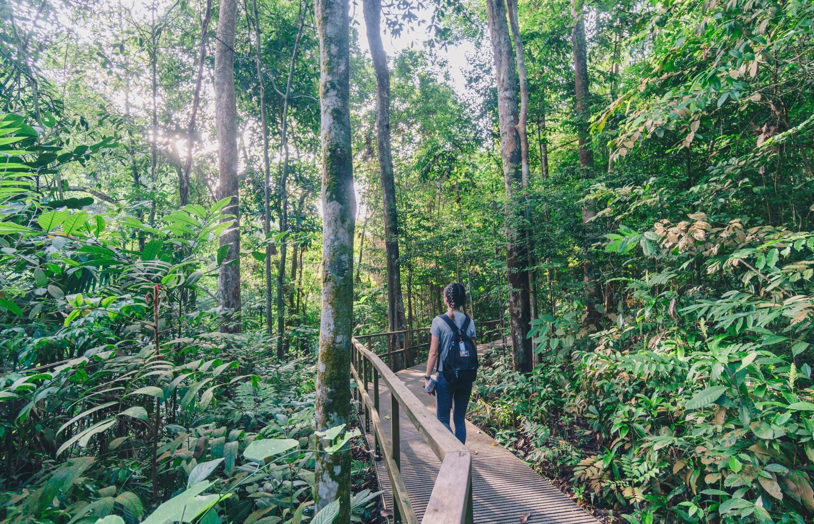
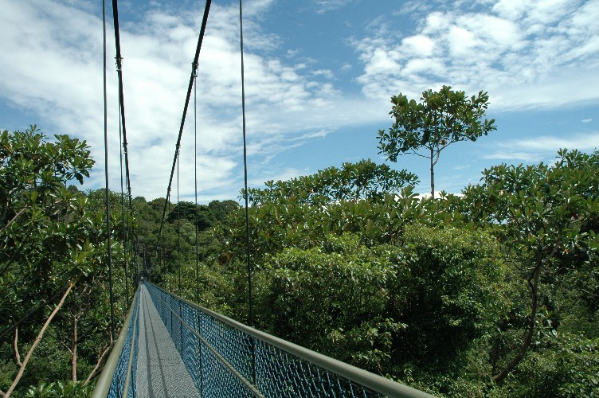
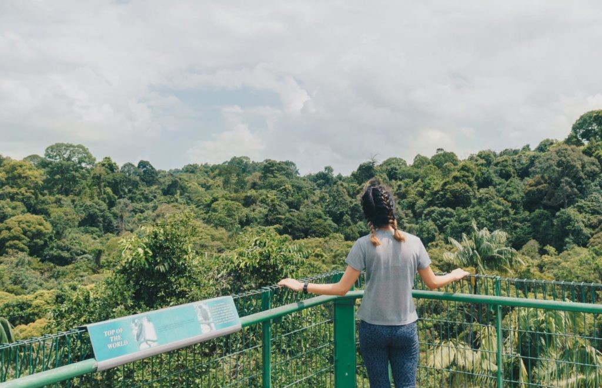

MacRitchie Reservoir Park
Lose yourself in the beauty of Mother Nature
Enjoy the scenic view from different angles
Admire the many aesthetic structures
MacRitchie Reservoir Park
Lose yourself in the beauty of Mother Nature
Enjoy the scenic view from different angles
Admire the many aesthetic structures
Take a break away from the city and explore the wilderness!

Immerse yourself in the greeneries within MacRitchie Reservoir Park, where you could trek, kayak, or have a picnic! Scroll down to find out more about what you could do in this scenic corner of Singapore!
Hanging above the lush greeneries
Suspended 25 metres above the forest floor, this iconic bridge has a spectacular 360° view of the greenery around. Without any high-rise buildings in sight, you could enjoy a quick photoshoot here!
Do refer to this guide if you are interested on going there!
*Note: MacRitchie Treetop Walk is closed from now until May 2021 for maintenance works. For more information, you may proceed to this link.
A worthwhile climb!
If you are looking for a challenge, head towards the 8-storeys high Jelutong Tower for a breathtaking view.
Reminiscent of a high-element course, you would be rewarded with a 360° view that rivals that of the Treetop Walk!
Functional and relaxing
Unlike conventional bridges, the Zig Zag Bridge has many bends, allowing users to take a relaxing stroll while enjoying the scenery.
In the middle of this asymmetrical bridge lies a bandstand. This landmark has been preserved to commemorate the old days, when school sporting events were held in the reservoir park. Unfortunately, the pavilion has been cordened off, but you can still walk right up to take a close look at it!
What's more, there is a Submerged Bridge nearby as well!

This 40 metres long bridge is definitely not an architectural error. Intentionally angled downwards, the Submerged Bridge may result in the users getting covered with ankle-deep water during rainier season!
If you are keen on crossing it, definitely remember to bring a pair of slippers along!
After a long day of exploration, you must be hungry...
After all the walking, you would be exhausted. If you did not prepare for picnic, there is always Mushroom Cafe for you to enjoy a hearty meal!
Located near the park entrance, the Mushroom Cafe offers local cuisines at affordable prices! You can get their Laksa at just $4.90 and a cup of refreshing Coke Float at $3 !
Ready to explore? You have to look at these!
Before you head down to MacRitchie, you might want to consider some of these things:
(Who am I going with? )
As the saying goes: The more the merrier! It would be a lot more fun to bring along some of your friends; it might even be a new experience for all of you! Unfortunately, as of now, a maximum of 8 pax per group are allowed.
(Am I going to kayak? Trek? Or should I have a picnic? )
What are you going to do there? Would the weather be ideal for the activity? Do plan your day before making your way down! You may like to refer to a picture of the map here!
(Am I missing something? What do I have to bring? )
Pack the necessary and appropriate equipments and gears for the activities you have planned! Here are some of the essentials you might want to include in your packing list
(Do I want to Grab down? Or is there a more convenient or cheaper way to get there? )
Lastly, before you head down, you should find out how to get there! Below are some information you might find useful!
There are various ways for you to reach MacRitchie Reservoir Park.
Below is the map of MacRitchie Reservoir Park. The attractions that I talked about above are located in blue!
(You can click on them to find out more!)
Lastly, if you are interested to learn more, you may click here!
Hope you have an enjoyable experience! 😊